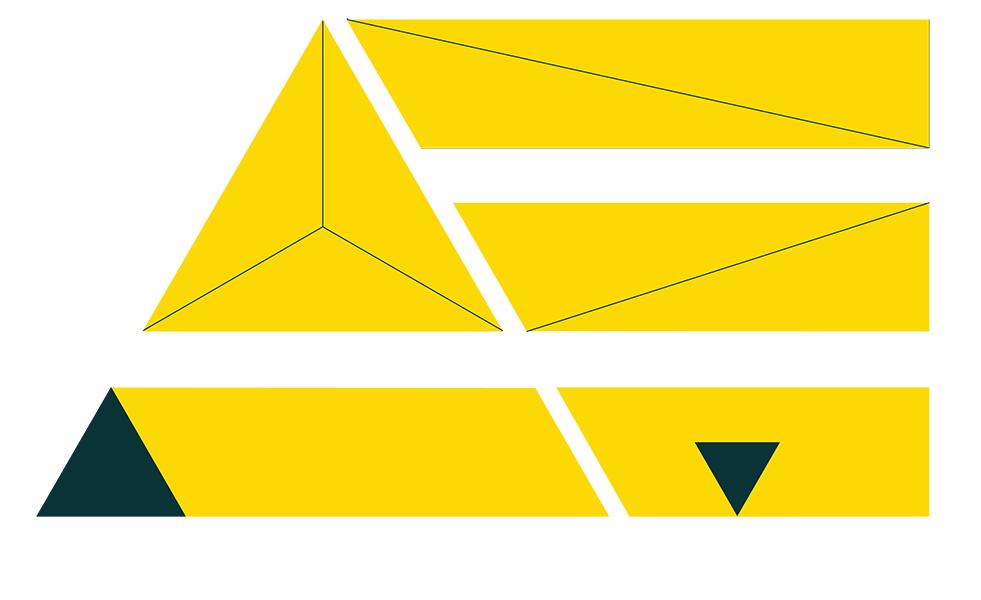

Point of Reflection:
Public Mini-Library in Rabin Square

2nd Year Studio Project @ David Azrieli School of Architecture, Tel-Aviv University
Advisors: Arch. Zvi Harel, Arch. Morris Shapiro
The project is located in the city of Tel-Aviv’s main public square. Adjacent to the City Hall, the square is ordinarily populated by passers-by. On special occasions it is the central location for political rallies, local/national demonstrations and parades.
Concept: The concept of the project is derived from Michel Foucault’s idea of Heterotopia – a space of otherness in the social realm, which is opposed to all other places within the realm. My aim in this exercise was to plan a parallel place, mirroring the outside world yet somewhat opposing it, being isolated yet penetrable. The chosen location for the project was intended to allow the visitor to reclaim their power over the public realm, assuming the position of a powerful observer. Visitors hold total control over what they see, once Rabin Square is spread in front of them in 360° – they choose where to locate themselves inside the project, how to frame the view and what to look at.
Architectural expression: the chosen programme was a small media library containing books, CDs and DVDs, randomly placed on book shelves, and free for public use. Anyone is free to move, remove or add as they please. Only one single architectural element is used throughout the structure – wooden book shelves, functioning also as floor, stairs and benches. Since the exterior walls are made of glass, the gaps between the books become peeking holes to the outside. The perceived reality is constantly changed, as the books are shifted throughout the library. Thus, a dynamic filter system is applied on the public square, symbolically emphasizing or blurring segments of reality, or even reality as a whole.


Copyright © 2020, ATELIER EVEN 